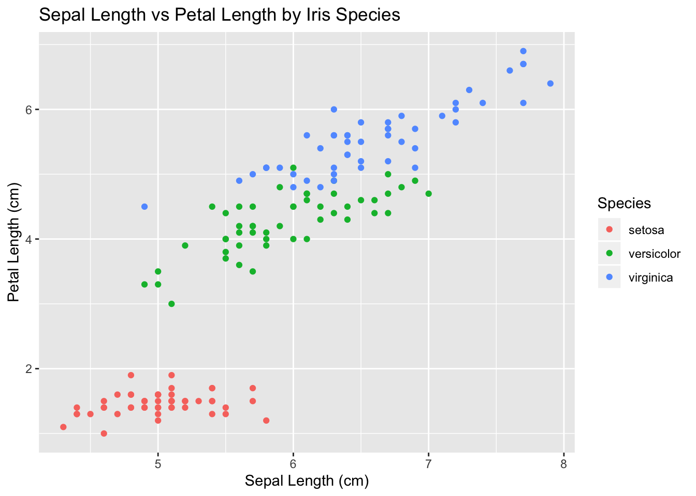
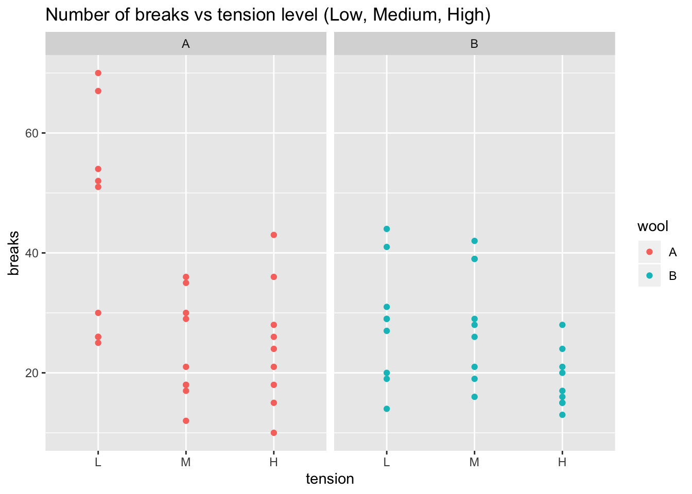

Chapter 3 Practicum 1
3.1 How to Store Data
Data is commonly stored in spreadsheets.
- Columns are variables of interest
- Rows are observations.
Example: A dataset we’ll call iris which has 150 observations of three species of iris. Each observation measured the length and width of both the petals and sepals.
| Sepal.Length | Sepal.Width | Petal.Length | Petal.Width | Species |
|---|---|---|---|---|
| 5.1 | 3.5 | 1.4 | 0.2 | setosa |
| 4.9 | 3 | 1.4 | 0.2 | setosa |
| 4.7 | 3.2 | 1.3 | 0.2 | setosa |
| 4.6 | 3.1 | 1.5 | 0.2 | setosa |
| 5 | 3.6 | 1.4 | 0.2 | setosa |
| 5.4 | 3.9 | 1.7 | 0.4 | setosa |
Example: A dataset we’ll call GradeBook that has records of how well a student performed on exams. I’ll refer to this storage as the wide orientation.
| StudentID | Exam 1 | Exam 2 | Final Exam |
|---|---|---|---|
| 1 | 87 | 87 | 81 |
| 2 | 91 | 88 | 85 |
| 3 | 88 | 79 | 92 |
| 4 | 91 | 97 | 94 |
| 5 | 100 | 83 | 90 |
| 6 | 85 | 79 | 81 |
Or I could have stored the information in the following manner, which I’ll refer to as the long orientation.
| StudentID | Assesment | Score |
|---|---|---|
| 1 | Exam 1 | 91 |
| 1 | Exam 2 | 90 |
| 1 | Final Exam | 87 |
| 2 | Exam 1 | 73 |
| 2 | Exam 2 | 76 |
| 2 | Final Exam | 53 |
3.2 Tableau
3.2.1 Task 1: Dragging variables onto destination
First we’ll make a scatterplot with some colors.

The iris data I used for this graph is available here: data: https://raw.githubusercontent.com/dereksonderegger/141/master/data-raw/iris.csv
3.2.2 Task 2: Modifying how a variable is displayed
https://raw.githubusercontent.com/dereksonderegger/141/master/data-raw/Lock5_GPAGender.csv
Modifying how a variable is displayed
- GPAGender
- Make a Barchart with Gender and # Piercings
- Turn # of Piercings into a discrete value.
- Fix Gender Levels. IFF( [GenderCode] = 1, ‘Male’, ‘Female’ )
- Change the colors associated with each gender.
3.2.3 Task 3: Reorder categorical variable levels
https://raw.githubusercontent.com/dereksonderegger/141/master/data-raw/warpbreaks.csv
